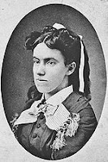

Amazing Lady!
10/2/2011
{kind=link}

Lottie Moon was born in 1840 and in 1861 was one of the first women in the South to receive a master's degree. After teaching school in Kentucky, Georgia, and Virgina, she left for China in 1873, where she served 39 years as a missionary to the women and girls of that country.
Lottie frequently wrote letters to the United States, detailing Chinese culture, missionary life and the great physical and spiritual needs of the Chinese people. She challenged Southern Baptists to go to China or give so that others could go. By 1888 the Southern Baptist women had organized and collected funds to send workers needed in China. This tradition continues today and a Christmas offering in Lottie's name is collected every year to help support about 5,000 missionaries worldwide.
When Jim Burke first contacted me about building a "Lottie Moon" figure for his presentations about this amazing missionary pioneer I was a bit challenged as to how to approach the task. But as I learned more about the work of this lady, small in stature (only 4 feet, 3 inches tall as reported by someone who knew her), but a giant in missionary history, I felt an increasing desire and inspiration to complete a figure in her semi-likeness. Thus, today's "Lottie Moon" came to be. Jim has several engagements lined up for the fall to use her in presentations regarding support for international missions. The programs will be entitled, "Lottie Moon Alive (almost)."